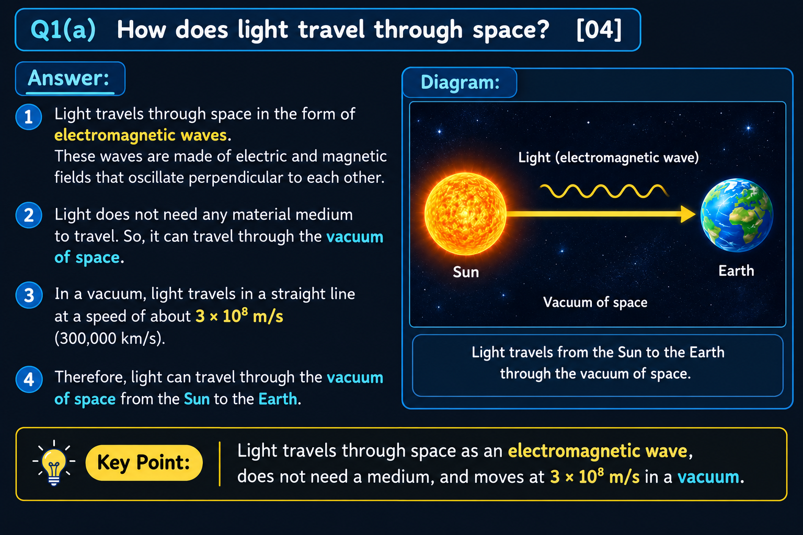

01
SPRING–2025 · 04 MARKS
How does light travel through space?

Exam answer
Light travels through space as a transverse electromagnetic wave. It consists of mutually perpendicular electric and magnetic fields, both perpendicular to the direction of propagation.
Light does not require a material medium and can travel through vacuum. In vacuum, its speed is
c = 1 / √(μ₀ε₀) ≈ 3 × 10⁸ m s⁻¹
Conclusion: Light is an electromagnetic wave and travels through the vacuum of space.
Remember: E ⟂ B ⟂ direction of travel.